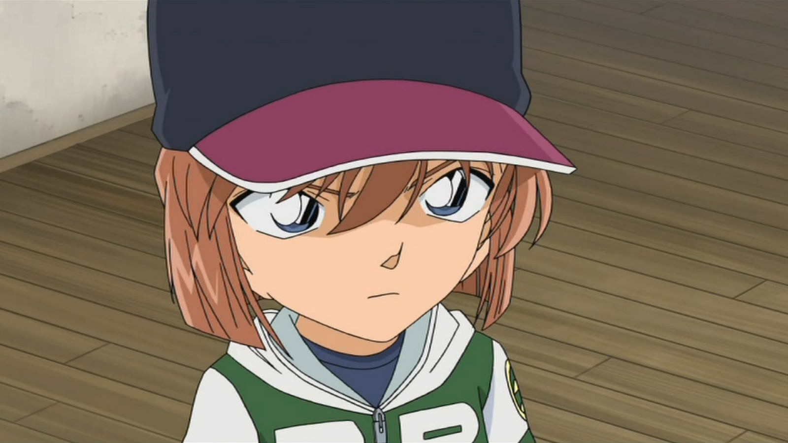
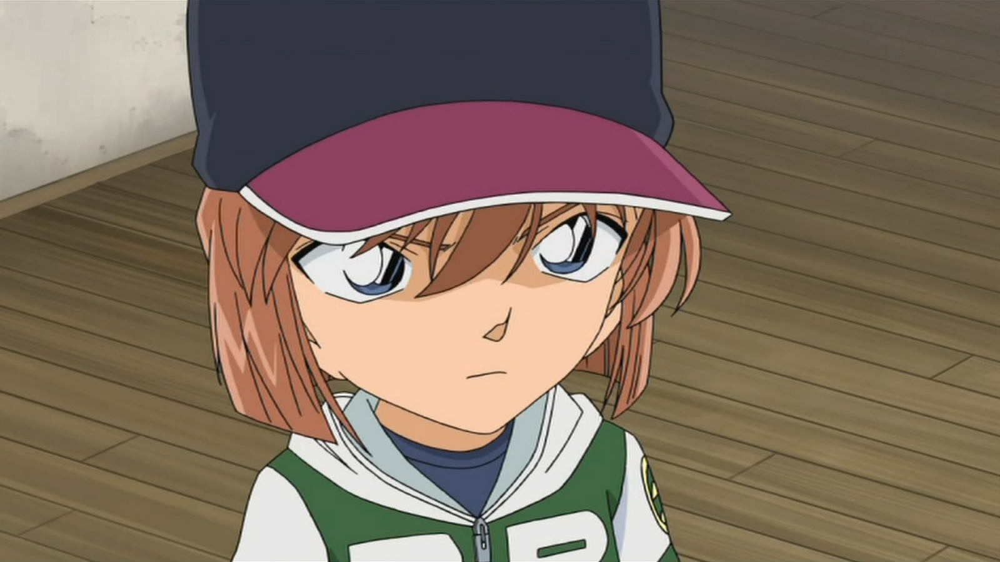
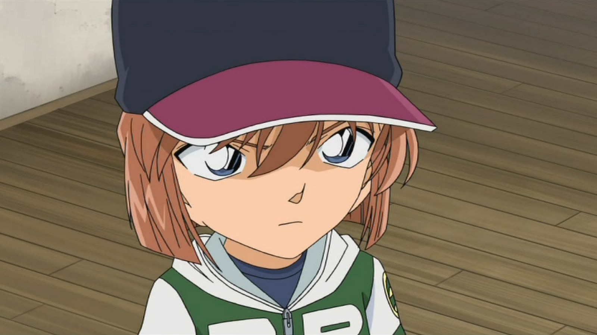

人物图集

 

本名宫野志保 原是黑暗组织科学家雪莉，后因姐姐被组织杀害而反抗，本打算寻死而吃下自己研发的APTX4869未完成品，身体却意外变成小孩。 逃离组织后，便化名为灰原哀，是日本漫画家青山刚昌所创作的漫画作品《名侦探柯南》中的主要角色之一。
| 药品名 | 药品介绍 |
|---|---|
| APTX-4869 | 外观是印有“APTX-4869”的白、红胶囊，为宫野志保（灰原哀）曾效力于黑暗组织时所研发的药品（目前已终止研发）。 药理作用能引起细胞爆发性坏死，同时强化端粒酶活性，使细胞分裂潜力增强、也能让试验者的遗体无法检验出毒素； 但服用后极小几率会导致身体缩小（在细胞自我破坏程序的偶发作用之下， 使得神经组织外的骨骼、肌肉、内脏、毛发等细胞退化到成长过程的幼儿时期），是一种神秘毒药. |
| 白干儿 | 即高粱酒，此酒非灰原所研发，只能短暂解除“APTX-4869”的毒性（药效约略为十分钟) 虽然再次服用便会因产生抗药性而无效，但是为灰原来研制解药不可或缺的参考成分。 |
| APTX-4869的暂时性解药 | 解药外观和“APTX-4869”同为白、红胶囊状，不过由于尚处于测试阶段因此药效最多二十四小时（再次服用便会因产生抗药性而缩短持续时间）。在感冒时服用效果较佳，有时会搭配特殊药物（服用后会产生感冒症状）； 但如果感冒过于严重则会造成反效果 |

| 年份 | 期刊 | 名次 |
|---|---|---|
| 2005 | 周刊少年Sunday | 排名第4 |
| 2008 | 日本雅虎 | 排名第4 |
| 2012 | 周刊少年Sunday | 排名第3 |
| 2021 | 柯南25周年官方 | 排名第3 |